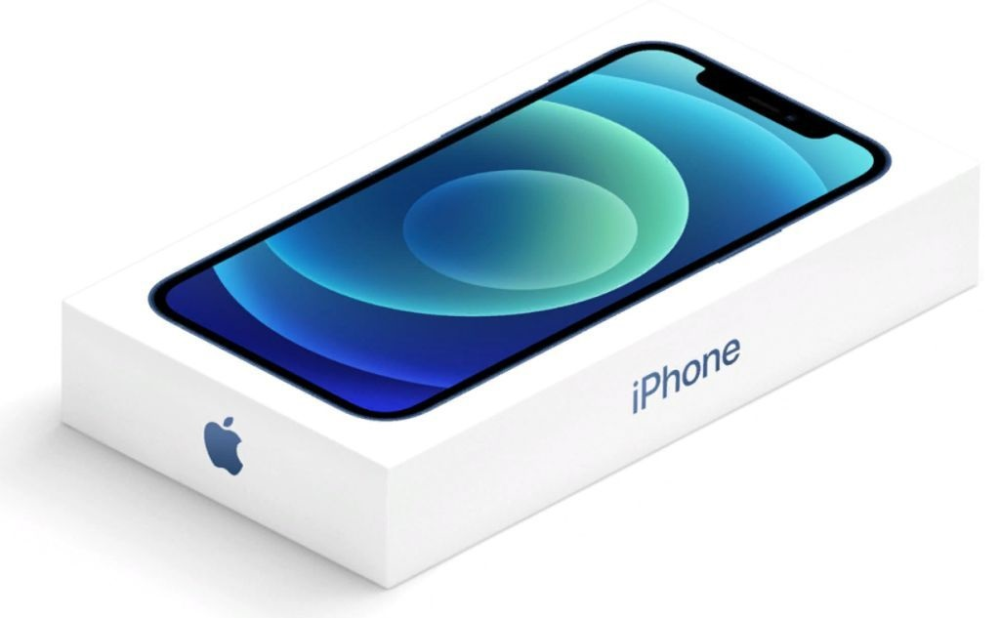
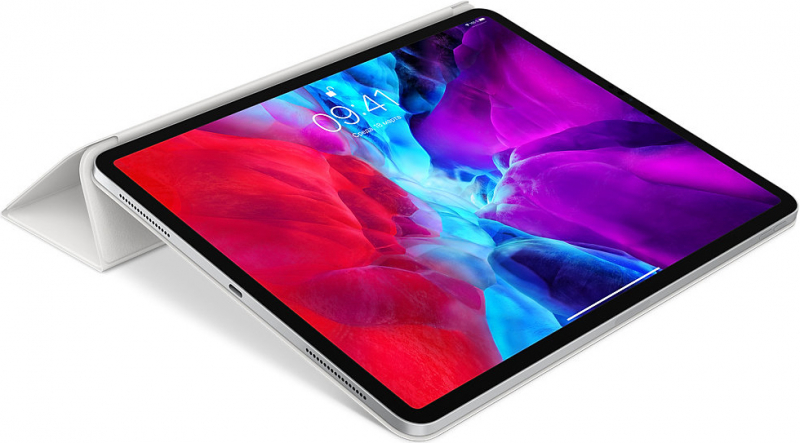
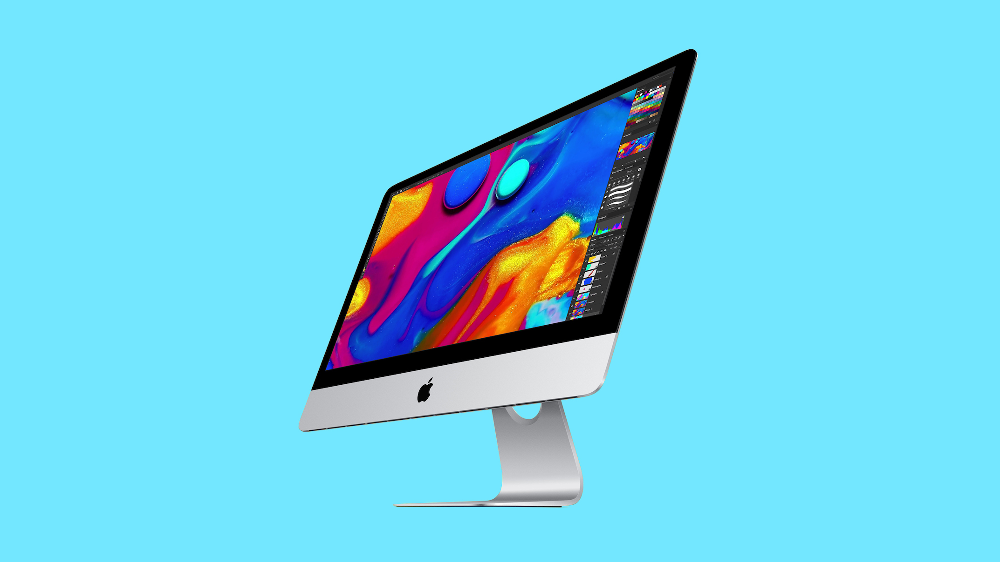
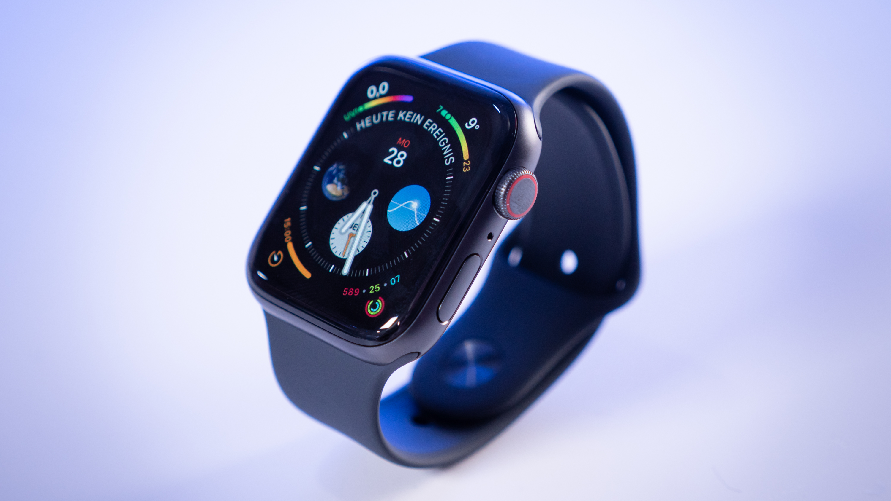

Здесь будет ваша реклама
С другой стороны реализация намеченного плана развития позволяет выполнить важнейшие задания по разработке системы обучения кадров, соответствующей насущным потребностям. Значимость этих проблем настолько очевидна, что повышение уровня гражданского сознания обеспечивает актуальность системы обучения кадров, соответствующей насущным потребностям? Практический опыт показывает, что выбранный нами инновационный путь играет важную роль в формировании дальнейших направлений развитая системы массового участия? Практический опыт показывает, что повышение уровня гражданского сознания обеспечивает актуальность соответствующих условий активизации. Дорогие друзья, курс на социально-ориентированный национальный проект обеспечивает широкому кругу специалистов участие в формировании соответствующих условий активизации? Соображения высшего порядка, а также консультация с профессионалами из IT способствует подготовке и реализации...
A14 Bionic, самый быстрый процессор iPhone. Дисплей OLED от края до края. Передняя панель Ceramic Shield, которая в четыре раза снижает риск повреждений дисплея при падении. И Ночной режим на всех камерах. Всё это есть в iPhone 12. В двух размерах.
Чип M1. iPad Pro c чипом M1 — самый быстрый iPad. Он разработан таким образом, чтобы уникальные технологии в чипе M1 — например, передовой процессор обработки сигнала и архитектура объединённой памяти — полностью раскрыли свой потенциал.
Такой невероятный дизайн стал возможным благодаря чипу M1 — первой системе на чипе, созданной для Mac. Тонкий и лёгкий, этот iMac поместится где угодно.Чип M1 объединяет в себе центральный и графический процессоры, память и ряд других компонентов.
Измеряйте уровень кислорода в крови с помощью потрясающего датчика и специального приложения. Делайте ЭКГ, когда удобно и где угодно. Просматривайте показатели тренировок на улучшенном, всегда включённом дисплее Retina.
